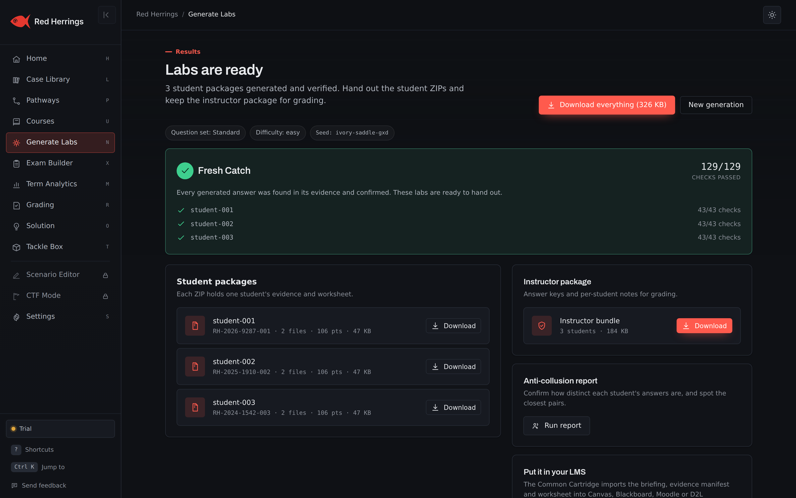

Hands-on forensics and incident response labs for your program
Dozens of digital forensics and incident response cases that generate a different, verified variant for every student and grade themselves, so a department can run the same course across sections and semesters without an instructor rebuilding evidence by hand. Runs on instructor machines, exports to your LMS, and nothing to host.

Dozens of cases · a different variant per student · verified answer keys · Canvas, Blackboard, Moodle, D2L and LTI 1.3 · runs offline
The problem a lab course creates for a program
Every cybersecurity program wants hands-on forensics and incident response. Running it well across sections, adjuncts and semesters is where the cost lands.
Lab prep eats the semester
Building one realistic disk image, log set or packet capture with a correct answer key takes an instructor days. Doing it for every case in a 14-week course, then doing it again next year because the old images are on a forum, is the reason many programs still teach forensics from slides.
Integrity breaks when everyone has the same file
A shared image means a shared answer. One student's write-up becomes the section's write-up by the second week, and the instructor cannot tell method from copying. Public challenge images are already solved online, with the walkthrough a search away.
Grading drifts between sections
Two instructors, two rubrics, two ideas of partial credit. When the same course runs in three sections with an adjunct in one of them, outcomes stop being comparable and the program cannot say what a passing student can actually do.
Accreditation wants evidence, not intentions
Program review, outcome assessment and workforce-grant reporting all ask the same question: show us the hands-on work and how it was measured. A folder of ungraded zip files does not answer it. A per-student record of cases attempted, questions answered and scores against a published rubric does.
What a department gets
One desktop app on each instructor's machine, one license for the department, and the same case library behind every section.
For every section, every semester
- A different case per student. Every case generates a unique variant from a roster: different names, timestamps, hashes and answers under the same rubric. Students discuss method; they cannot trade answers.
- Verified answer keys. Every answer is re-derived from the planted evidence before the lab ships, so grading disputes are settled by opening the artifact.
- One-click grading and LMS export across sections. Score a whole section at once, with the reason for each mark. Export a gradebook CSV to Canvas, Blackboard, Moodle or D2L, or connect over LTI 1.3 for roster sync and grade passback. See the student portal and LMS page.
- Two course packs, ready to run. A 14-week Digital Forensics course and an 8-week Incident Response course, each with the week-by-week case order, rubrics and syllabus. See course packs.
- Pathways aligned to certifications and ATT&CK. Ordered case sequences aligned to the published GCFE, GASF, GNFA, GCIH, CySA+, GCFR and GCFA objectives, plus role paths, with every incident response case mapped to MITRE ATT&CK. See learning pathways and incident response.
On the Department plan
- Several instructors under one license. Full-time faculty and adjuncts run the same cases, the same rubrics and the same grading, so outcomes compare across sections.
- Scenario Editor. Adapt a case to your own organization names, policies and evidence emphasis, or build a program-specific variant for a capstone.
- CTF mode. Run a timed, scored event for a club, an open house or a final, with the same per-student variants and a live board.
- Institution logo on generated documents. Case briefs, evidence manifests and report templates carry your program's name and mark.
- No servers to host. The app runs on instructor machines: a Windows installer plus macOS and Linux builds, offline after a one-time activation. IT has nothing to stand up, patch or review beyond a desktop install.
Compare the options
Hand-built labs, public images, hosted ranges, or this
Each way of running a lab course has real strengths. The comparison page lays them side by side on prep time, integrity, grading, cost and what IT has to host.
How adoption usually goes
Most departments go from first download to a department license inside one semester, with no procurement surprises on the way.
Trial on one section
One instructor downloads the app, runs the free 30-day trial, and generates a lab for a live section. Students solve in the browser or from a zip; the instructor grades in one click and exports to the LMS. Nothing to install for students, nothing for IT.
Department license
When the section is through its first two or three cases, the department moves to a Department plan: several instructors, every case including the Expert capstones, the Scenario Editor, CTF mode and the institution's logo on documents. Course packs give adjuncts the same syllabus the lead instructor used. Plans are on the pricing page.
PO and W-9 available
We invoice against an institutional purchase order and provide a W-9, vendor forms and a signed quote on request. Prices are in USD. The department contact form reaches the people who answer procurement questions.
For procurement and review
The documents a purchasing office, an IT security reviewer and an accessibility coordinator usually ask for, in one place.
PDFDepartment evaluation guide
A structured guide for the person running adoption: what to test in the trial, questions to ask, how the license works, and a checklist for IT and procurement.
Trust and securityWhere the data lives
Local generation and grading, no telemetry, Ed25519-signed licenses, offline after activation, and what connected LMS mode does and does not send.
AccessibilityAccessibility statement
How the app and the student portal meet accessibility expectations, known limitations and how to report an issue.
CompareAgainst the alternatives
Hand-built labs, public challenge images and hosted ranges beside Red Herrings, with the trade-offs stated plainly.
Free resourcesForms, rubrics and syllabi
Chain-of-custody form, report checklist, investigation rubric and the two course syllabi, free to use whether or not you buy.
Sample labA full case with its key
Download a complete student package and the verified answer key that goes with it, and open the evidence in your own tools.
Questions programs ask first
The four that come up in nearly every department conversation. The main FAQ covers the rest.
Where does student data live?
On the instructor's machine. Red Herrings generates and grades locally, makes no network call to do either, and sends no telemetry. Rosters, submissions and grades never leave the computer unless an instructor chooses to export them to the LMS. There is no hosted student account to create and nothing for the institution to host. The trust page has the full data-flow description.
Is the license per seat or per instructor?
Per instructor. An Educator plan covers one instructor and every student they teach, with no per-student seat count. A Department plan covers several instructors under one license, adds the Scenario Editor and CTF mode, and puts the institution's logo on generated documents. Plans are on the pricing page; institutional purchase orders are welcome.
Which LMS platforms does it work with?
Canvas, Blackboard, Moodle and D2L Brightspace. Grades export as a gradebook CSV for any of them, and connected mode uses LTI 1.3 with Deep Linking, roster sync and grade passback. Connected mode is opt-in; the default is the offline desktop app with a CSV export. Details are on the student portal and LMS page.
Who supports the instructors?
We do, directly. Every license includes email support for instructors, the getting-started guide and tool setup pages, and a department evaluation guide for the person running adoption. There is no reseller layer and no ticket queue shared with a larger product.
Run the first lab this week
Download the app, generate a three-student lab in under five minutes, and grade it. Free for 30 days, with no account, card or procurement to start. When the section is running, we can talk about the department.